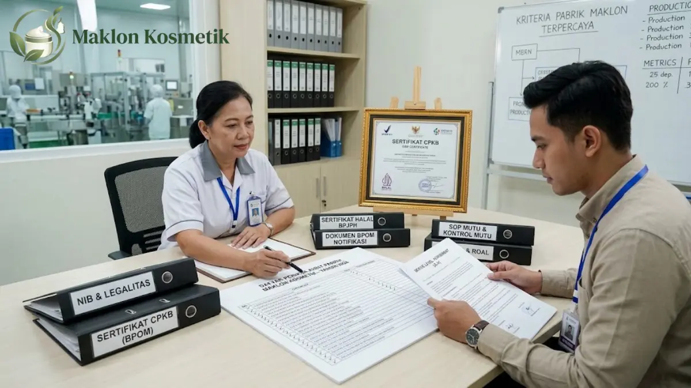

Kriteria Pabrik Maklon Kosmetik Terpercaya dengan SLA Tepat Waktu, Panduan Lengkap 2026

Daftar Isi Artikel Buka/Tutup
- Apa Itu Pabrik Maklon Kosmetik dan Mengapa SLA Penting?
- Mengapa Pasar Kosmetik Menuntut Pemilihan Pabrik yang Cermat?
- Apa Saja 7 Kriteria Pabrik Maklon Kosmetik Terpercaya?
- Apa Itu SLA Maklon Kosmetik dan Apa Saja Isinya?
- Bagaimana Cara Menilai Ketepatan Waktu Pabrik Maklon?
- Perbedaan Pabrik Maklon Terpercaya dan Pabrik Berisiko
- Apa Kesalahan Umum Saat Memilih Pabrik Maklon Kosmetik?
- Langkah Memilih Pabrik Maklon Kosmetik dari Awal sampai Kontrak
- Pertanyaan Umum (FAQ)
Ringkasan Poin Inti
- Pabrik maklon terpercaya membuka legalitas, sertifikat CPKB, dan fasilitasnya untuk diaudit langsung oleh brand.
- Jumlah industri kosmetik nasional melampaui 1.500 pabrikan pada akhir 2025, menuntut ketelitian saat menyeleksi mitra.
- SLA (Service Level Agreement) tepat waktu wajib tertulis memuat lead time per tahap, batas mutu, dan denda penalti.
- Harga termurah bukan patokan utama karena biaya keterlambatan peluncuran sering kali jauh lebih merugikan.
- Uji keandalan pabrik dengan batch perdana berskala kecil sebelum berkomitmen pada pesanan volume massal.
Apa Itu Pabrik Maklon Kosmetik dan Mengapa SLA Penting?
Pabrik maklon kosmetik adalah fasilitas manufaktur yang memproduksi formulasi kecantikan atas nama merek milik pihak lain. Pemilik brand menyediakan konsep produk, sedangkan pabrik menangani peracikan bahan hingga pengemasan.
Dalam praktiknya, terdapat model formula siap pakai (stock formula) yang cepat diluncurkan, serta formula khusus (custom formula) yang dirancang eksklusif sesuai permintaan spesifik brand Anda.
Di sinilah Service Level Agreement (SLA) memegang peranan krusial. SLA mengubah janji lisan 'sebulan selesai' menjadi komitmen tertulis yang memiliki tenggat hari kerja, standar mutu terukur, serta sanksi finansial bila meleset.
Mengapa Pasar Kosmetik Indonesia Menuntut Pemilihan Pabrik yang Cermat?
Data Badan POM yang dikutip Kementerian Perindustrian mencatat lonjakan jumlah produsen kosmetik nasional dari 1.292 pada 2024 menjadi lebih dari 1.500 industri pada akhir 2025.
Lebih dari 90 persen pelaku industri tersebut berskala kecil dan menengah (IKM). Pertumbuhan pesat ini memperluas opsi mitra, tetapi juga menghasilkan rentang standar mutu dan kepatuhan yang sangat lebar.
Bagi pemilik brand, label nama 'pabrik maklon' saja tidak cukup menjadi jaminan. Anda membutuhkan alat ukur objektif dan kriteria evaluasi teknis yang jelas sebelum mengikatkan modal usaha.
Apa Saja 7 Kriteria Pabrik Maklon Kosmetik Terpercaya?
Menyaring pabrik manufaktur yang kompeten dapat dilakukan dengan memverifikasi tujuh parameter mendasar berikut:
- 1. Legalitas dan Perizinan Lengkap: Memiliki Nomor Induk Berusaha (NIB) industri kosmetik dan NPWP perusahaan yang valid serta terverifikasi di kementerian.
- 2. Sertifikasi CPKB Aktif: Mengantongi sertifikat Cara Pembuatan Kosmetik yang Baik dari BPOM sesuai sediaan yang dipesan (krim, cairan, atau serbuk).
- 3. Laboratorium R&D Memadai: Memiliki fasilitas pengujian fisika-kimia, uji stabilitas formula suhu tinggi, serta kontrol kontaminasi mikroba.
- 4. Kapasitas Produksi Realistis: Skala lini mesin selaras dengan kebutuhan Anda; tidak kelebihan muatan (overcapacity) yang memicu antrean panjang.
- 5. Kontrol Mutu & Ketertelusuran: Setiap bets produksi didokumentasikan rapi mencakup asal bahan baku, nomor lot, hingga arsip sampel perpustakaan.
- 6. Transparansi Komunikasi: Menyediakan dedicated project manager yang responsif dan berani mengomunikasikan potensi kendala operasional sejak dini.
- 7. Kesediaan Menyepakati SLA Tertulis: Pabrik yang percaya diri dengan efisiensi sistem kerjanya tidak akan ragu menandatangani klausul denda keterlambatan.

Apa Itu SLA Maklon Kosmetik dan Apa Saja Isinya?
SLA maklon adalah instrumen kontrak kerja yang menetapkan tolok ukur operasional secara transparan. SLA yang berkualitas tidak berbelit-belit, melainkan memuat target angka pasti dan konsekuensi hukum.
Poin wajib dalam lembar SLA mencakup rincian lead time per tahapan produksi, batas toleransi perbedaan warna atau viskositas produk, jadwal pelaporan mingguan, serta besaran penalti harian bila pabrik terlambat menyerahkan barang.
Bagaimana Cara Menilai Ketepatan Waktu Pabrik Maklon?
Jangan hanya menanyakan 'berapa lama total pengerjaannya?'. Bedah alur proses menjadi tahapan terpisah untuk mengidentifikasi titik rawan keterlambatan (bottleneck):
| Tahapan Kerja | Pertanyaan Kunci Audit | Pemicu Keterlambatan Umum |
|---|---|---|
| Formulasi & Sampel Lab | Berapa kali batas revisi dan lead time per sampel? | Revisi aroma/tekstur berulang tanpa brief jelas |
| Uji Stabilitas Formula | Berapa minggu durasi uji dipercepat (accelerated test)? | Formula pecah/berubah warna sehingga harus diulang |
| Pengadaan Kemasan | Siapa yang memesan dan mencetak botol/label? | Kemasan impor tertahan bea cukai atau salah sablon |
| Produksi Massal | Berapa kapasitas batch harian mesin homogenizer? | Antrean lini mesin penuh pesanan brand lain |
| Quality Control (QC) | Berapa hari karantina lab mikrobiologi sebelum rilis? | Hasil cemaran melebihi batas toleransi mutu |
| Pengiriman Akhir | Apakah ekspedisi kargo bergaransi asuransi barang? | Dokumen jalan tertunda atau kendala armada logistik |
Mintalah kontak referensi brand alumni yang pernah memproduksi di sana untuk menanyakan apakah jadwal rilis pabrik selama ini konsisten atau sering meleset.
"Biaya termahal dalam bisnis kecantikan bukanlah selisih harga formula per botol, melainkan momentum peluncuran yang hangus akibat keterlambatan pasokan barang."
Perbedaan Pabrik Maklon Terpercaya dan Pabrik Berisiko
Pabrik berintegritas tinggi menunjukkan keterbukaan dokumen sejak awal pertemuan bisnis, sementara pabrik berisiko cenderung menutupi prosesnya:
| Aspek Evaluasi | Pabrik Maklon Terpercaya | Pabrik Maklon Berisiko |
|---|---|---|
| Transparansi Dokumen | NIB dan CPKB dipersilakan diverifikasi | Menghindar atau hanya memberikan nomor klaim |
| Kunjungan Pabrik | Disambut baik dan dijadwalkan resmi | Ditolak dengan berbagai alasan operasional |
| Estimasi Jadwal Waktu | Realistis dengan breakdown per tahapan | Janji manis waktu kilat tanpa dasar logis |
| Struktur Penawaran Biaya | Transparan all-in tanpa biaya susulan | Banyak muncul hidden costs di tengah jalan |
| Komitmen Kontrak & SLA | Bersedia menandatangani sanksi penalti | Hanya berpegang pada janji lisan sales |
| Kanal Komunikasi | Satu PIC dedicated dengan laporan berkala | Sulit dihubungi setelah uang muka ditransfer |
Apa Kesalahan Umum Saat Memilih Pabrik Maklon Kosmetik?
Kesalahan paling sering terjadi adalah memilih pabrik semata-mata karena iming-iming harga termurah tanpa mengaudit kebersihan lantai produksi secara langsung.
Mengabaikan sertifikasi halal juga merupakan kekeliruan fatal, mengingat PP No. 42 Tahun 2024 menetapkan tenggat penahapan wajib halal kosmetik pada 17 Oktober 2026.
Selain itu, banyak pemilik brand terlambat memesan wadah kemasan primer, padahal fabrikasi botol khusus sering memakan waktu pengadaan paling lama.
Langkah Memilih Pabrik Maklon Kosmetik dari Awal sampai Kontrak
Susun langkah kerja sama secara sistematis: mulai dengan merumuskan brief konsep produk, bandingkan 3 hingga 5 kandidat pabrik, minta proposal penawaran tertulis, dan lakukan audit fasilitas.
Setelah sampel formula disetujui, negosiasikan draf kontrak beserta lembar SLA resmi. Mulailah produksi dengan batch skala kecil terlebih dahulu guna membuktikan ketepatan waktu pabrik sebelum memesan kuantitas besar.
Cari Mitra Maklon dengan Kepastian Waktu & Mutu CPKB?
Maklon Kosmetik ID memberikan kepastian Service Level Agreement (SLA) tertulis, legalitas BPOM lengkap, serta transparansi biaya tanpa hidden costs.
Pertanyaan Umum (FAQ)

Anggun (Tri)
Spesialis Quality Assurance & Regulasi Manufaktur di Maklon Kosmetik ID. Berpengalaman dalam pengawasan kepatuhan CPKB dan manajemen SLA produksi kosmetik.